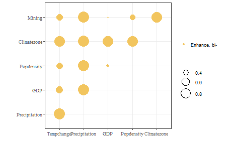

Robust Geographical Detector & Robust Interaction Detector(RGD & RID)
Source:vignettes/rgdrid.Rmd
rgdrid.RmdLoad data and package
names(ndvi)
## [1] "NDVIchange" "Climatezone" "Mining" "Tempchange" "Precipitation"
## [6] "GDP" "Popdensity"Run RGD
ndvi_rgd = rgd(NDVIchange ~ ., data = ndvi,
discvar = names(dplyr::select(ndvi,-c(NDVIchange,Climatezone,Mining))),
discnum = 3:8, cores = 12)
ndvi_rgd
## *** Robust Geographical Detector
##
## | variable | Q-statistic | P-value |
## |:-------------:|:-----------:|:--------:|
## | Precipitation | 0.8883955 | 4.77e-10 |
## | Climatezone | 0.8218335 | 7.34e-10 |
## | Tempchange | 0.3722571 | 3.22e-10 |
## | Popdensity | 0.2205321 | 9.65e-10 |
## | Mining | 0.1411154 | 6.73e-10 |
## | GDP | 0.1164814 | 1.08e-10 |
plot(ndvi_rgd)
Run RID
RID allows you to obtain the interactions of all
possible combinations of variables. By default,
Spatial Intersection are used to generate a new spatial
partition of the interaction variables.
ndvi_rid = rid(NDVIchange ~ ., data = ndvi,
discvar = names(dplyr::select(ndvi,-c(NDVIchange,Climatezone,Mining))),
discnum = 8, cores = 12)
ndvi_rid
## *** Robust Interaction Detector
##
## | variable1 | variable2 | Interaction |
## |:-------------:|:-------------:|:------------:|
## | Tempchange | Precipitation | Enhance, bi- |
## | Tempchange | GDP | Enhance, bi- |
## | Tempchange | Popdensity | Enhance, bi- |
## | Tempchange | Climatezone | Enhance, bi- |
## | Tempchange | Mining | Enhance, bi- |
## | Precipitation | GDP | Enhance, bi- |
## | Precipitation | Popdensity | Enhance, bi- |
## | Precipitation | Climatezone | Enhance, bi- |
## | Precipitation | Mining | Enhance, bi- |
## | GDP | Popdensity | Enhance, bi- |
## | GDP | Climatezone | Enhance, bi- |
## | GDP | Mining | Enhance, bi- |
## | Popdensity | Climatezone | Enhance, bi- |
## | Popdensity | Mining | Enhance, bi- |
## | Climatezone | Mining | Enhance, bi- |
plot(ndvi_rid)